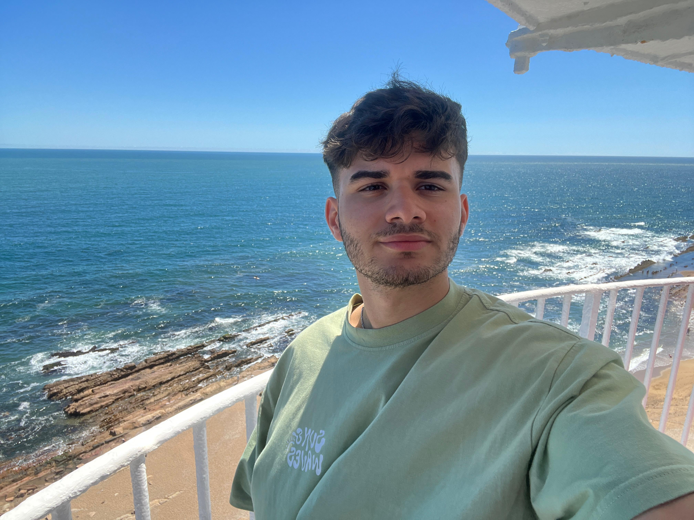

¿Quién soy?
Soy profesor de Ciencias Computacionales en DGES y en DGETP, donde también doy clases de Tecnología, Diseño Web y Diseño Gráfico Gastronómico. Me encanta la tecnología y, sobre todo, poder aplicarla en contextos donde muchas veces se la ve como algo lejano o inaccesible.
Trabajo en varias instituciones, pero tengo un fuerte sentido de pertenencia por una escuela agraria donde estamos participando en las Olimpiadas de Robótica, en las categorías Robótica y Do Your Bit.
Disfruto mucho dar clases. Es una tarea que se adapta a mi forma de ser: cambiar, moverme, innovar. Estar ocho horas sentado frente a un escritorio no es lo mío. Este trabajo me ocupa mucho tiempo, pero también me llena. Estoy en Jóvenes a Programar porque quiero seguir creciendo, tanto a nivel personal como profesional, en este camino que realmente me apasiona.
